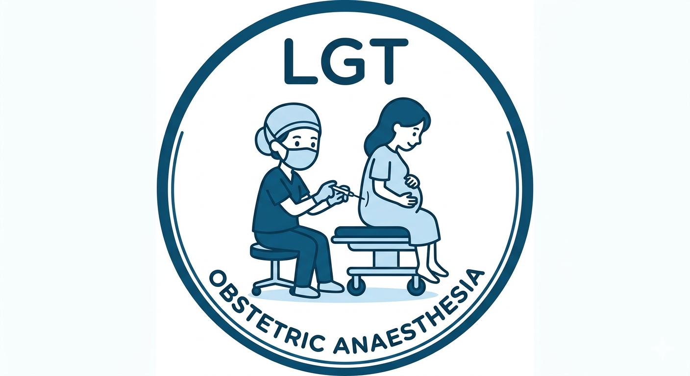

Quick Reference Guide
OAA Quick Reference Handbook
Emergency guidance for obstetric anaesthesia — including PPH, eclampsia, high/total spinal, failed intubation, and more.
This application is a quick-reference summary based on the LGT Obstetric Anaesthesia Guidelines. It is intended for use by trained clinicians and does not replace clinical judgement or formal guidelines.
View full LGT Obstetric Anaesthesia Guidelines (PDF)
Version 2026-02-07 For local guidance only.